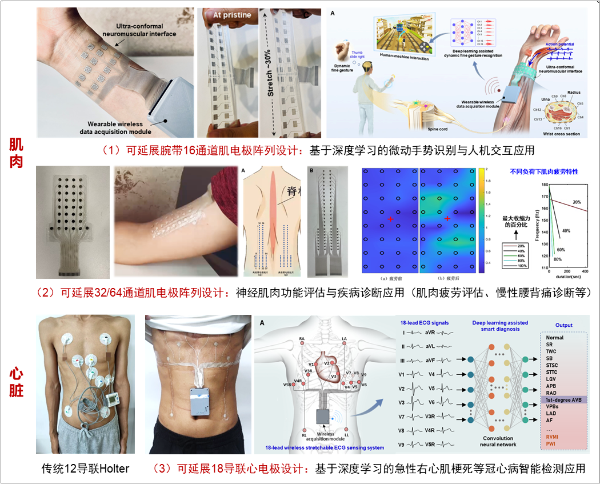
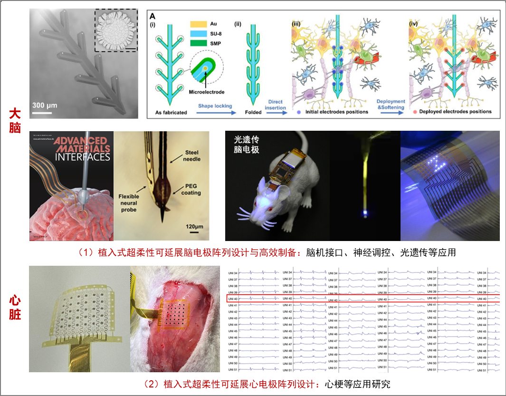
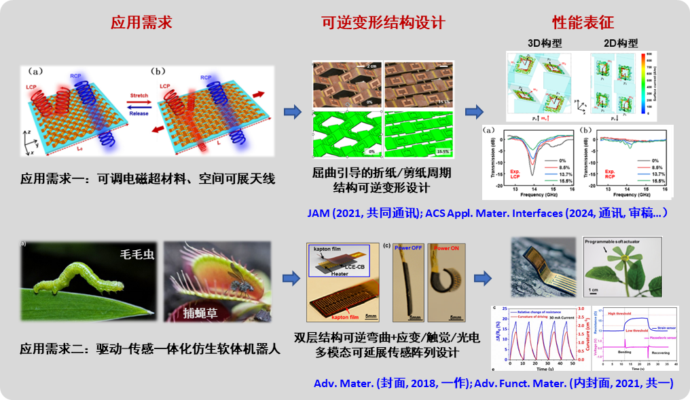

.png)
- 研究员，浣江实验室启航创新工坊，浙江大学航空航天学院 (2023年11月至今)
- 博士后，浙江大学国际联合学院（海宁国际校区），生物电子国际研究中心
合作导师：骆季奎、欧阳宏伟 (2021年07月- 2023年10月)
- 博士，浙江大学航空航天学院，导师：宋吉舟、陈伟球 (2015年09月 - 2021年06月)
- 访问学者，美国休斯敦大学机械工程系，合作导师：Cunjiang Yu (2015年09月 - 2021年06月)
- 学士，西南交通大学力学与工程学院，导师：李翔宇 (2011年09月 - 2015年06月)
- 1、生物集成软电极阵列的力学设计与应用
- 2、空间可调电磁超材料
- 3、驱动-传感一体化智能仿生软体机器人
- 代表性论文列表如下：
- [1].Chengjun Wang, Changhong Linghu, Shuang Nie, Chenglong Li, Qianjin Lei, Xiang Tao, Yinjia Zeng, Yipu Du, Shun Zhang, Kaixin Yu, Hao Jin, Weiqiu Chen, Jizhou Song*. Programmable and scalable transfer printing with high reliability and efficiency for flexible inorganic electronics. Science Advances, 2020, 6(25): eabb2393.
- [2].Chengjun Wang, Min Cai, Zengming Hao, Shuang Nie, Changying Liu, Hongen Du, Jian Wang, Weiqiu Chen, Jizhou Song*. Stretchable, multifunctional epidermal sensor patch for surface electromyography and strain measurements. Advanced Intelligent Systems, 2021, 2100031.
- [3].Chengjun Wang, Shun Zhang, Shuang Nie, Yipin Su, Weiqiu Chen*, Jizhou Song*. Buckling of a stiff thin film on a bi-layer compliant substrate of finite thickness. International Journal of Solids and Structures, 2020, 188: 133-140.
- [4].Chengjun Wang, Kyoseung Sim K, Jin Chen, Zhoulyu Rao, Yuhang Li, Weiqiu Chen, Jizhou Song, Cunjiang Yu*. Soft ultrathin electronics innervated adaptive fully soft robots. Advanced Materials, 2018, 30(13): 1706695.
- [5].Chengjun Wang, Weijie Hong, Yidong Deng, Lingyi Lan, Shun Zhang, Jianfeng Ping, Yibin Ying, Cunjiang Yu, Jikui Luo*, Weiqiu Chen*, Zuobin Chen*, Jizhou Song*. A wireless wrist-worn ultra-conformal neuromuscular interface system for thumb-controlled seamless human-machine interactions. (Under Review)
- [6].Ye Qiu†, Chengjun Wang†, Xiaoyan Lu†, Huaping Wu*, Xiaolong Ma, Jiahui Hu, Hangcheng Qi, Ye Tian, Zheng Zhang, Guanjun Bao, Hao Chai, Jizhou Song*, Aiping Liu*. A biomimetic drosera capensis with adaptive decision-predation behavior based on multifunctional sensing and fast actuating capability. Advanced Functional Materials, 2022, 32(13): 2110296. (共同一作)
- [7].Yingli Shi Y†, Chengjun Wang†, Yafei Yin, Yuhang Li*, Yufeng Xing, Jizhou Song*. Functional soft composites as thermal protecting substrates for wearable electronics. Advanced Functional Materials, 2019, 29(45): 1905470. (共同一作)
- [8].Shun Zhang†, Chengjun Wang†, Huan Gao†, Chaonan Yu, Qinghao Yan, Yuchen Lu, Zhehao Tao, Changhong Linghu, Zhou Chen, Kedi Xu*, Jizhou Song*. A removable insertion shuttle for ultraflexible neural probe implantation with stable chronic brain electrophysiological recording. Advanced Materials Interfaces, 2020, 7(6): 1901775. (共同一作)
- [9].Xinlin Xu, Shuchang He, Chengjun Wang*, Xuan Chen, Zuojia Wang, Jizhou Song*. Origami-inspired chiral metamaterials with tunable circular dichroism through mechanically guided three-dimensional assembly. Journal of Applied Mechanics 90.1 (2023): 011007. (通讯作者)
- [10].Suhao Wang, Qianqian Jiang, Hang Liu, Chaonan Yu, Pengxian Li, Kedi Xu, Rui Xiao, Yaoyao Hao*, Chengjun Wang*, Jizhou Song*. Mechanically adaptive and deployable intracortical probes enable long-term neural electrophysiological recordings. PNAS (通讯作者, Under Review)
- [11].Shuchang He, Chengjun Wang*, Xuan Chen, Zuojia Wang, Jizhou Song. Kirigami-based mechanically reconfigurable electromagnetic metamaterial. npj Flexible Electronics (通讯作者)
- [12].Yidong Deng, Chengjun Wang*, Tong Qiu, Jiafeng Ni, Weipeng Xuan*, Jinkai Chen, Hao Jin, Shurong Dong, Jikui Luo*, Large-area flexible dynamic 18-lead ECG monitoring patch integrated with deep learning for cardiovascular diagnosis. Cell Reports Physical Review (通讯作者, Accepted)
- [13].Changhong Linghu, Shun Zhang, Chengjun Wang, Kaixin Yu, Chenglong Li, Yinjia Zeng, Haodong Zhu, Xiaohui Jin, Zhenyu You, Jizhou Song*. Universal SMP gripper with massive and selective capabilities for multiscaled, arbitrarily shaped objects. Science Advances 6.7 (2020): eaay5120.
- [14].Min Cai, Zhongdong Jiao, Shuang Nie, Chengjun Wang, Jun Zou, Jizhou Song*. A multifunctional electronic skin based on patterned metal films for tactile sensing with a broad linear response range. Science Advances 7.52 (2021): eabl8313.
- [15].Guorui Li*, Tuck-Whye Wong, Benjamin Shih, Chunyu Guo, Luwen Wang, Jiaqi Liu, Tao Wang, Xiaobo Liu, Jiayao Yan, Baosheng Wu, Fajun Yu, Yunsai Chen, Yiming Liang, Yaoting Xue, Chengjun Wang, Shunping He, Li Wen, Michael T. Tolley, A-Man Zhang, Cecilia Laschi, Tiefeng Li*. Bioinspired soft robots for deep-sea exploration. Nature Communications 14.1 (2023): 7097.
- 代表性专利列表如下：
- [1]王成军，宋吉舟，陈伟球，一种柔性可拉伸多通道凸形表面肌电极及其制备方法，201810209677.4
- [2]王成军，宋吉舟，陈伟球，一种基于网状结构设计的类皮肤多通道表面肌电极及其制备方法， 201810208891.8
- [3]王成军，宋吉舟，陈伟球，一种柔性可拉伸多通道凸形表面肌电极，ZL201820347266.7
- 4]王成军，宋吉舟，陈伟球，一种基于网状结构设计的类皮肤多通道表面肌电极，ZL201820346884.X
- [1]国家自然科学基金青年基金，2024.1 - 2026.12，主持（在研），经费：30万
- [2]2022年度博士后创新人才支持计划，主持（结题），经费：63万（力学学科全国5人）
- [3]中国博士后科学基金第71批面上资助（一等），主持（结题），经费：12万（力学学科全国2人）
- [4]浙江大学国际联合学院（海宁国际校区）博士后“潮涌计划”A类资助，主持（结题），经费：60万
- [5]浙江大学医学院基础医学系李达三·叶耀珍再生医学发展基金，主持（结题），经费：30万
- [6]可穿戴高密度
- [7]之江实验室之江国际青年人才基金，2021年，主持（结题）
- [8]可延展柔性无机光子/电子集成器件的基础研究，国家科技部973项目，2017年，参与
- [8]可延展柔性无机光子/电子集成器件的基础研究，国家科技部973项目，2017年，参与
- [10]基于仿生设计主动控制界面粘附的高效转移印刷方法研究，国家自然科学基金面上项目，2019年，参与
- [1]首届全国创新创业优秀博士后，人力资源和社会保障部（2021）
- [2]浙江大学优秀博士后专项资助（2021）
- [3]浙江大学争创优秀博士学位论文资助（2020）
- [4]首届全国博士后创新创业大赛全国银奖（2021）
- [5]山东（青岛）博士后创新创业成果大赛创新组唯一金奖（2021）
- [6]“建行杯”第七届中国国际“互联网+”大学生创新创业大赛，金奖（2021）
- [7]国际柔性电子大会最佳海报奖（Best Poster Award），2021年10月
- [8]浙江大学国强奖学金（2020）、中国航天学科奖学金（2020）、唐立新奖学金（2018）、优秀研究生
王成军
浣江实验室智能感知与仿生系统团队负责人浙江大学航空航天学院平台“百人计划”研究员
民族：汉族
籍贯：湖北孝感
出生年月：1992年10月
电话：15072144469
邮箱：cc689193@126.com
政治面貌：中共党员
一、学习与工作经历
二、主要学术业绩
浣江实验室智能感知与仿生系统团队负责人，浙江大学航空航天学院平台“百人计划”研究员。主要从事软物质与柔性结构力学研究，近年来在国家基金委青年基金、博后创新人才支持计划、博士后科学基金面上（一等）等项目资助下，在生物集成软电极、空间可展电磁超材料、智能仿生软体机器人等方面取得重要创新进展，在Sci. Adv.、Adv. Mater.、Adv. Funct. Mater.、IJSS、JAM等期刊上累计发表SCI论文30余篇，包括多篇封面和ESI高被引论文。研究成果被国内外学者引用1700余次，H-index为18（Google Scholar），同时也得到人民日报、Science Daily等数十家媒体的关注。受理/授权国家发明专利10余项。荣获首届全国创新创业优秀博士后称号。主要学术业绩包括：
1.1 研究背景与意义
表皮式/植入式电极阵列是获取生物电生理信号（脑电图、肌电图、心电图）的有效工具，在运动医学、康复工程、脑机接口等前沿领域具有重要应用价值。然而，传统电极阵列（硅基脑电极、TMSi肌电极阵列）制备材质硬，与软组织刚度不匹配、协调变形能力差，无法有效获取生物软组织（大脑、肌肉、心脏等）大面积、长周期、动态变形下的电生理信息。因此，亟需发展新型可延展超柔性电极阵列，突破现有电极的局限性，推动相关领域研究进程。
1.2 创新成果
（1）表皮式大面积可延展电极阵列。针对运动医学和康复工程等领域对表皮电信号大面积动态检测的迫切需求，提出软硬混合力学设计，建立了大变形服役环境下软电极阵列与生物软组织协调变形力学设计理论，发展了适用于皮肤动态变形的超薄可延展电极阵列大面积批量制备新策略，实现了电极性能与皮肤变形的解耦，突破了传统表皮式电极阵列局限于小范围、静态测试的不足，并探索了基于深度学习的新型大面积电极阵列在微动手势识别与人机交互、慢性腰背痛诊断、心脏疾病预警等创新应用（见图1）。相关成果以第一作者发表在Cell Reports Physical Review (2024), IJSS (2020) 和Adv. Intell. Syst. (2021)上，授权国家发明专利2项。另有1篇论文审稿中。
图1 表皮式大面积可延展电极阵列设计与应用
（2）植入式超柔性可延展电极阵列。针对脑科学和光遗传等领域对深部神经活动低损伤、长周期动态检测和干预的迫切需求，提出鱼骨状形状记忆可折叠结构设计，发展了一种机械自适应和可展开的植入式超柔性神经电极阵列，能够在折叠状态下以最小损伤面积植入脑组织，同时在生理条件下自动软化以减少与脑组织的机械不匹配，并同步展开部署到更宽的脑区域,有效克服了当前脑电极植入困难以及记录跨度和周期有限的难题（见图2）。此外，针对高性能超柔性光遗传脑电极高效制备难题，提出了智能界面设计调控界面黏附新策略，发展了低成本高效激光驱动转印集成技术，实现了几微米厚超薄发光芯片与柔性衬底的大面积异质集成，实现光遗传脑电极的高效制备。相关成果以第一作者发表在Sci. Adv. (2020)和Adv. Mat. Interfaces (2021)上，得到数十家媒体的关注，授权国家发明专利2项。另有1篇论文（PNAS, 共同通讯）审稿中。
图2植入式超柔性可延展电极阵列设计与应用
2.1 研究背景与意义
可调电磁超材料是通过改变超材料组成单元的几何构型实现电磁性能的可逆调控，在实际应用中具有重要优势。然而，现有可调电磁超材料往往需要借助特殊的材料设计或者外加的变形控制装置，制备过程比较复杂，调控的精度和稳定性有待提升。
2.2 创新成果
针对现有可调电磁超材料制备过程复杂和调控精度低的难题，提出基于屈曲引导的折纸/剪纸周期结构可逆变形设计，可通过简单拉伸连续调控超材料的圆二色性等电磁性能（见图3），分析了电磁超材料的力学变形和电磁性能调控机制，并用于微波/太赫兹可调手性超材料和谐振滤波器。相关成果发表在JAM（2021，共同通讯）、IJAM（2024，通讯）和npj Flexible Electronics（2024，通讯）上。
3.1 研究背景与意义
软体机器人在实际应用中展示出优异的性能并已取得重要进展，然而，由于软体机器人自身变形大，传统的刚性传感器无法与软体机器人有效集成，因此，目前报道的大多数软体机器人不具有类似生物一样的感知和反馈控制运动能力，极大地限制了其与周围环境动态交互的能力。
3.2 创新成果
针对上述难题，提出了驱动-传感一体化自适应薄膜结构设计，融合人造肌肉软驱动器、可延展传感器和激励器，模拟软体生物的复杂构型变化，实现了智能自适应仿生软体机器人（见图3），为智能仿生全软机器人的设计和制造提供了新思路。相关成果发表在Adv. Mater. (2018，一作, 封面)和Adv. Funct. Mater. (2022，共一, 内封面)上。
图3 智柔结构设计及电磁超材料和智能仿生软体机器人应用